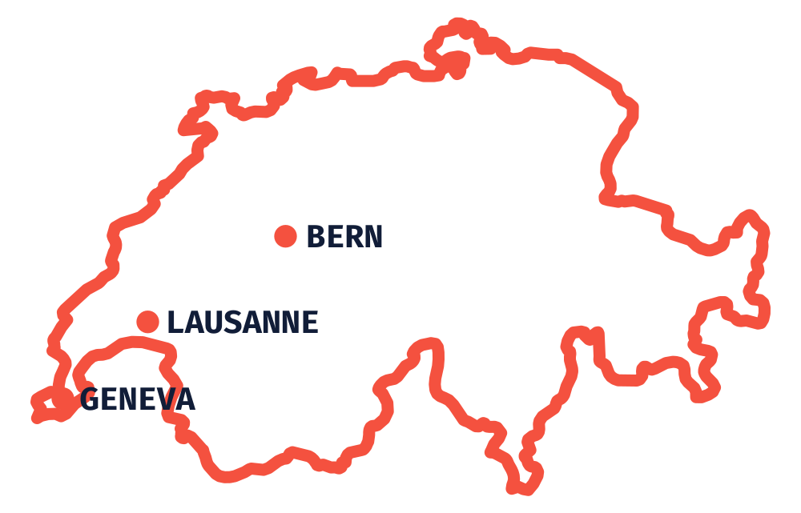
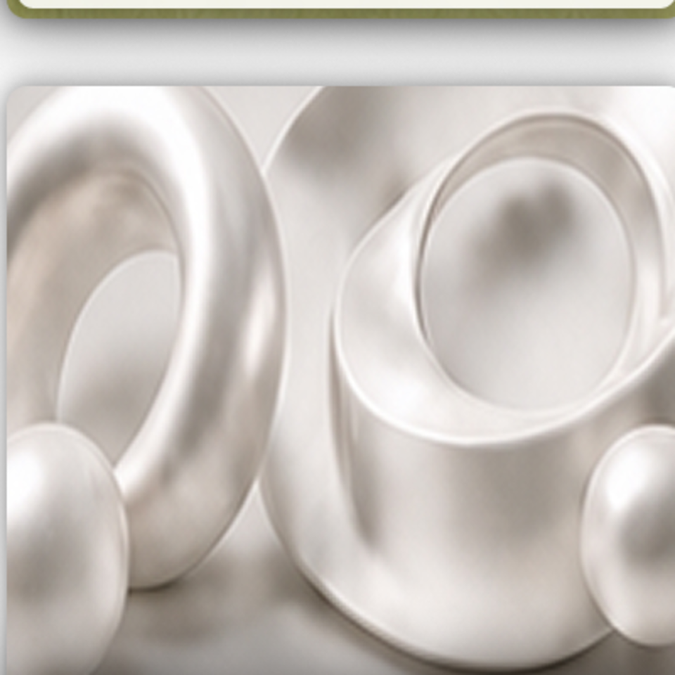
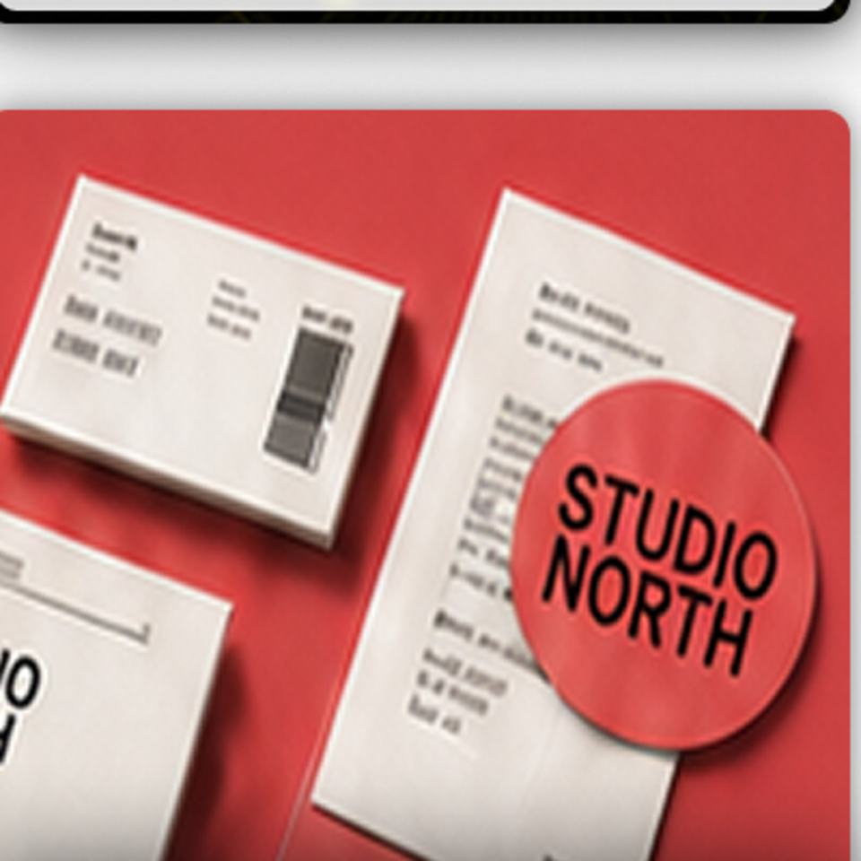
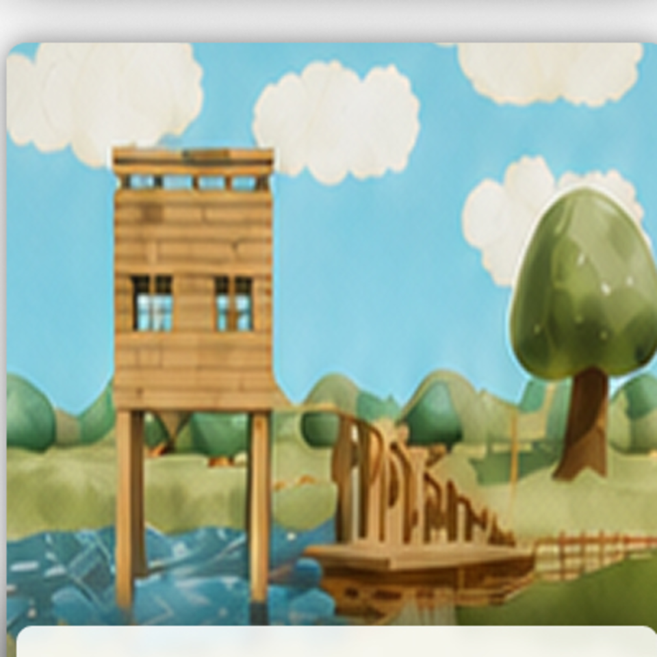

Create
A personal archive of photographs, scanned objects and worlds built away from the desk.
Captured - Photography
Photos from a trip through Geneva, Lausanne and Bern, from the big views to smaller things I spotted along the way.

A few things I have managed to catch in the sky, including the Moon, starry nights, the northern lights and a solar eclipse.
A few photos from family trips to Italy, mostly mountain views, lakes and places where I stopped to take in the scenery.
Scanned - Photogrammetry + AR



01 / 03 Drag to rotate
View in ARBuilt - Blender scenes
Just Design - Virtual Exhibition
The same exhibition scene shown through Workbench, Blender and its real-time Fortnite implementation.


 Workbench
Workbench